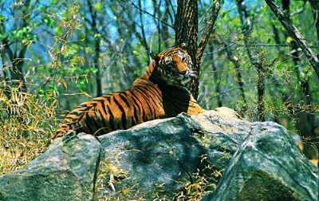
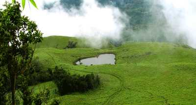

Banasura Sagar Dam
Banasura Dam is the largest earthen dam in the country and the second-largest in Asia. The view of the sprawling reservoir from the top of the dam is breathtaking.

Wayanad Wildlife Sanctuary
It is the second largest wildlife sanctuary and comprises of rare as well as endangered species of both flora and fauna. It is surrounded by Mudumalai in Tamil Nadu,Nagarhole and Bandipu

Chembara peak
With a height 2100 m, the Chembara peak is an attractive destination for Campers and Mountaineers

Soochipara Falls
Soochipara Falls is a three-tiered waterfall, which cascades at its best between the months of June and January. The site is also popular with rock climbers apart from picnickers.